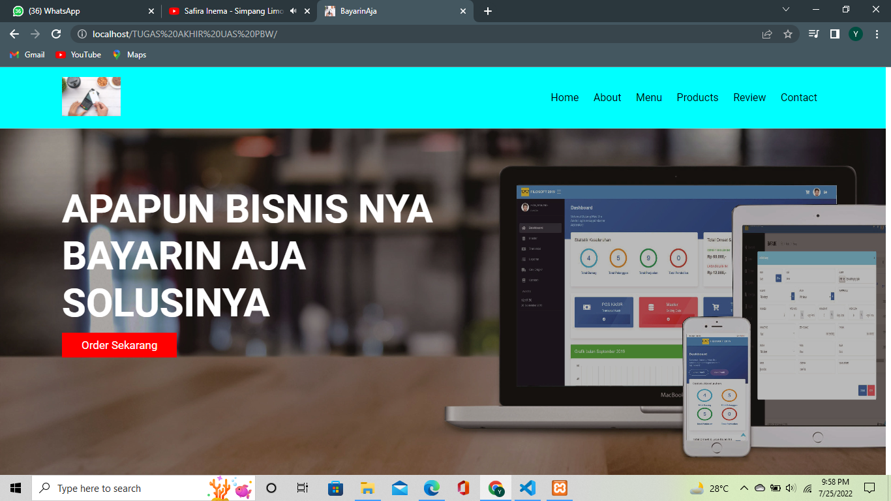

About me 😊
Halo, perkenalkan nama saya Yoga Adi Pratama, saya berasal dari kota Pati, Jawa Tengah. Kesibukan saya saat ini adalah kuliah.
Saya kuliah di Universitas Dian Nuswantoro, Semarang. Saat ini saya sudah semester 6 dan mengambil jurusan Teknik Informatika.
Saya memiliki cita-cita yaitu ingin menjadi seorang Software Developer yang handal dan jago dibidang Website. Untuk mewujudkan
cita-cita saya itu, saya terus berusaha belajar dan mempelajari berbagai bahasa pemrograman seputar web seperti JS, PHP dan mempelajari
framework website juga seperti Laravel, CodeIgniter, dan framework lainnya.
Saya sangat bersemangat dalam belajar website, dan keingintahuan saya sangat besar dibidang website sehingga mendorong saya untuk
terus maju dan berusaha dalam mengejar cita-cita saya. Jika saya belajar website dan menjumpai error ataupun masalah, saya senang
karena saya dapat belajar dalam menyelesaikan permasalahan tersebut. Saya ingin agar ketika saya bisa menjadi seorang Web Developer,
saya bisa mengajak dan membantu teman-teman di lingkungan saya agar bisa belajar dan mengetahui apa itu teknologi website dan mengajaknya
menjadi seorang Web Developer.
My Hobby 🏍️
Saya memiliki hobi yaitu suka main motor dan memodifikasi motor, saya juga suka touring dan melakukan perjalanan jauh naik motor.
Sudah beberapa kota yang saya datangi seperti, Semarang, Solo, Jogja dan Sarangan. Touring Selanjutnya yaitu ke Pantai Menganti, Kebumen.
Telaga Sarangan
Ini adalah foto yang saya ambil ketika saya touring di Telaga Sarangan Magetan.
Keraton Solo
Ini adalah foto yang saya ambil ketika saya touring di Kota Solo tepatnya di Keraton Solo.
Pantura Race
Ini adalah foto yang saya ambil ketika saya berada di jalan pantura Demak-Kudus.
Education 🎓
Seperti yang saya jelaskan di halaman About yaitu saya menempuh kuliah di Universitas Dian Nuswantoro (UDINUS).
Universitas Dian Nuswantoro (UDINUS) merupakan salah satu perguruan tinggi swasta terakreditasi A di Semarang,
Indonesia. Didirikan pada tahun 1990. Rektor pada tahun 2010 adalah Prof.Dr.Ir. Edi Noersasongko, M.Kom.
Lalu di bagian About juga sudah saya jelaskan bahwa saya mengambil jurusan Teknik Informatika, Fakultas Ilmu Komputer di UDINUS.
Saya minat mengambil jurusan ini karena tertarik dan terinspirasi dari tetangga saya yang merupakan programmer dibidang website.
Lalu saat ini saya sudah semester 6 dan mengambil peminatan Rekayasa Perangkat Lunak (RPLD) dengan IPK 3.77/4.00.
Project 💻
Selama perkuliahan ini, dari semester 1 sampai semester 6, sudah banyak project atau tugas yang saya kerjakan di bidang website ini.
Untuk saat ini di semester 6, saya juga mengambil program pemerintah yaitu MBKM dengan mengambil di website juga. Lalu untuk MBKM ini,
saya mengerjakan final project berbasis website juga. Saya suka mengerjakan project maupun tugas-tugas tersebut karena bisa melatih skill
dan juga bisa menjadi portofolio saya di bidang website. Banyak sekali ilmu yang saya dapatkan dari mengerjakan project maupun tugas ini.
Saya selalu semangat dalam mengerjakan project-project maupun tugas yang diberikan guna melatih kemampuan dan skill ngoding saya agar menjadi
seorang Web Developer yang jago dan handal dalam menciptakan sebuah website yang bagus dan cantik secara tampilan dan fungsinya.

BayarinAja Apps
Ini adalah sebuah aplikasi berbasis website yang saya buat ketika saya berada di semester 1. Ini adalah sebuah Tugas dari mata kuliah pemrograman web.
Clone Instagram
Ini adalah project atau tugas dari program MBKM SIB dari pemerintah yaitu membuat sebuah clone instagram dengan framework Laravel.
Kerja Praktek Berbasis Website
Ini adalah project atau tugas dari prodi untuk membuat aplikasi Kerja Praktek Berbasis Website dengen framework Laravel.
SINATA (SISTEM INFORMASI TUGAS AKHIR)
Ini adalah final project yang saya kerjakan pada program MBKM SIB dari pemerintah yang membuat sebuah sistem Tugas Akhir (SINATA) dengan menggunakan framework Laravel.